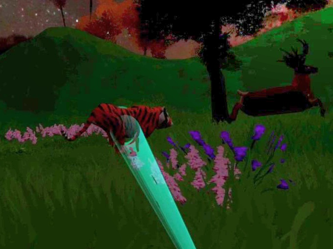
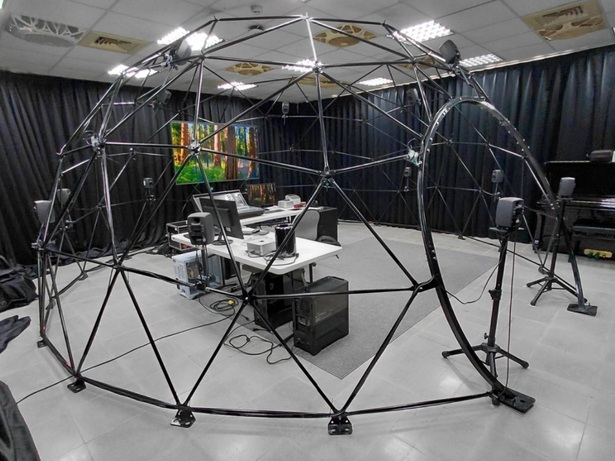
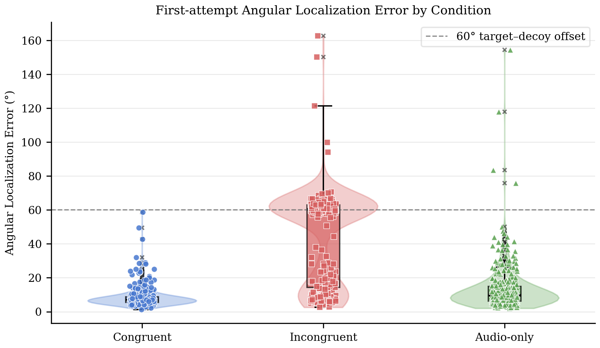
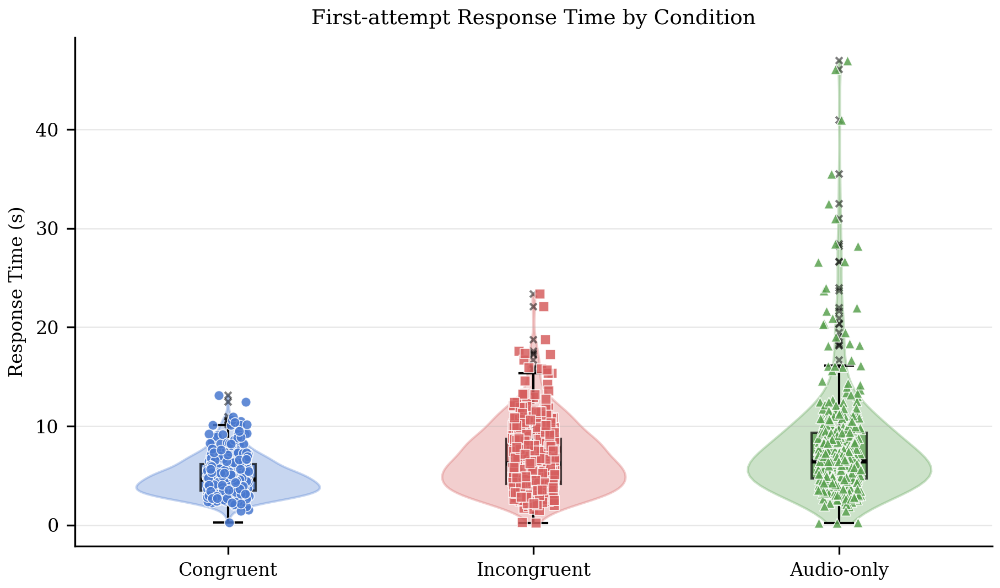
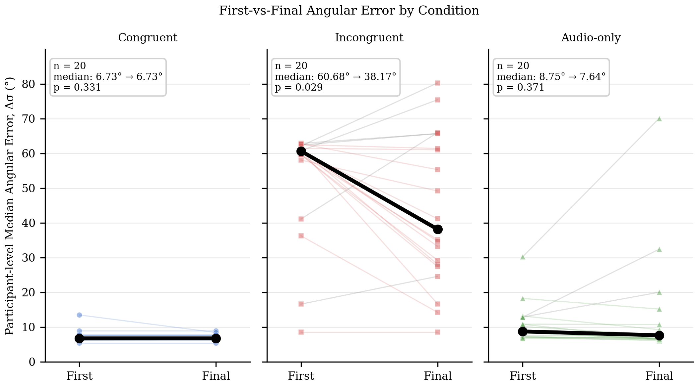

Measuring visual capture in virtual reality under sustained audiovisual conflict with third-order Ambisonics
Pioneered a Human-Computer Interaction perception study with a decoupled head-gaze and hand-pointing tracking paradigm in Unity to quantify human sensory boundaries and cognitive overhead during sustained cross-modal conflict in 16-channel spatial audio.
Median angular localization error under conflict with a 0.738 Visual Bias Index (p < 0.001).
Substantial reaction time latency penalty required to resist visual capture and localize audio.
16-channel HOA decoding array eliminated front-back confusion confound across all conditions.
Context and Problem Discovery
This research originated from a fundamental question in spatial game engine development: why do virtually all game audio tutorials instruct developers to bind the audio emitter object directly to the 3D GameObject as a child transform?
In the physical world, mechanical physics locks sound generation to physical bodies. But in Virtual Reality and Augmented Reality, tracking latency, occlusions, and sensor calibration drift frequently desynchronize auditory and visual cues. If a sound object is deliberately separated from its visual representation, how does human perception and spatial behavior react?
Investigating this question led me into psychoacoustic literature and sound source localization mechanics. Navigating dense academic papers and evaluating cross-modal hypotheses required a specialized workflow.
Because juggling fragmented tools slowed the conceptual process, I built an open-source visual research workspace (CollarAgent) to organize research literature into structured concept maps and formal manuscripts.
System Exploration and Discarded Iterations
Designing an experimental apparatus capable of measuring pure cross-modal conflict without introducing experimental artifacts required overcoming several technical and methodological roadblocks:
Commercial HRTF headphones suffer from front-back confusion, meaning measured angular error could be dismissed as acoustic ambiguity rather than visual capture. Resolved via physical 16-channel HOA decoding.
Allowing participants to rotate their heads moves the decoy toward peripheral vision, dissolving cross-modal conflict before the response can be captured.
Complex custom geometry risked frame stutter in VR. Selected optimized low-poly animal assets that maintained a locked 90 FPS across all participant trials.
Participants maintained continuous head gaze on the visual decoy via continuous HMD tracking while indicating perceived sound direction independently with a handheld 6DoF controller beam.
To execute the experiment reliably, I structured the system across three synchronized layers:
Unity C# scripts separated the Audiokinetic Wwise sound emitter from the visual GameObject, injecting a 60 to 65 degree static disparity.
Continuous HMD head tracking anchored visual gaze to the decoy while a handheld 6DoF controller raycast beam recorded manual localization at trigger confirm.
Third-order Ambisonics physical loudspeaker array delivering pristine 3D spatial audio that eliminated front-back confusion.



Empirical Findings and Statistical Validation
Twenty participants completed 60 main trials (20 Congruent, 20 Incongruent, 20 Audio-only) following five practice trials in a counterbalanced within-subjects design.
| Experimental Condition | Visual Context | Median Angular Error | Response Time | Visual Bias Index | Front-Back Rate |
|---|---|---|---|---|---|
| Congruent Baseline | Aligned red sphere target (0 degree disparity) | 6.90 degrees | 4592 ms | Not applicable | 0.0% |
| Incongruent Conflict | Visual decoy with 60 to 65 degree auditory offset | 60.35 degrees (p < 0.001) | 6235 ms (p < 0.001) | 0.738 (Strong capture) | 0.3% (p = 0.368) |
| Audio-Only Baseline | Uniform neutral dark-gray background (0 lx) | 9.62 degrees (p = 0.022) | 6454 ms | Not applicable | 0.0% |
Visual distractors inflated initial angular error to a median of 60.35 degrees with a Visual Bias Index of 0.738, compared to 6.90 degrees in Congruent trials (p < 0.001, effect size dz = 2.81). Resisting this sensory conflict imposed a 1.64-second cognitive latency penalty (dz = 1.05).
The empirical data across all sessions established three critical operational conclusions:
- Visual Capture Dominance Over Spatial Audio: Even when high-fidelity 16-channel Third-Order Ambisonics provided pristine spatial sound, participants were heavily biased toward the visual decoy on their first attempt. High-order audio alone cannot prevent visual attention capture.
- Measurable 1.64-Second Cognitive Overhead: Incongruent trials required an average of 6,235 ms to respond, compared to 4,592 ms in Congruent conditions. Resisting visual capture demands substantial attentional and inhibitory effort.
- Dynamic Within-Trial Self-Correction: Across successive pointing attempts within a single trial, participants showed significant behavioral recovery, reducing median angular error from 60.68 degrees down to 38.17 degrees (p = 0.029).



Design Engineering Takeaways
This empirical research demonstrates that spatial computing interfaces and multimodal AI systems must maintain strict cross-modal coherence. Interface designers cannot rely on high-fidelity spatial audio to compensate for visual drift, occlusions, or sensor calibration errors.
Contradictory perceptual cues trigger immediate cognitive latency and attention hijacking, establishing clear tolerances for multi-sensor AR and VR systems.
Spatial interfaces cannot treat sensory modalities as isolated silos. High-fidelity 16-channel spatial audio cannot prevent human attention hijacking when visual cues contradict sound sources.
System designers must prioritize tight sensor synchronization and calibration over pushing single-modality resolution, because human cognition pays an immediate 1.6-second latency penalty to resolve sensory conflict.